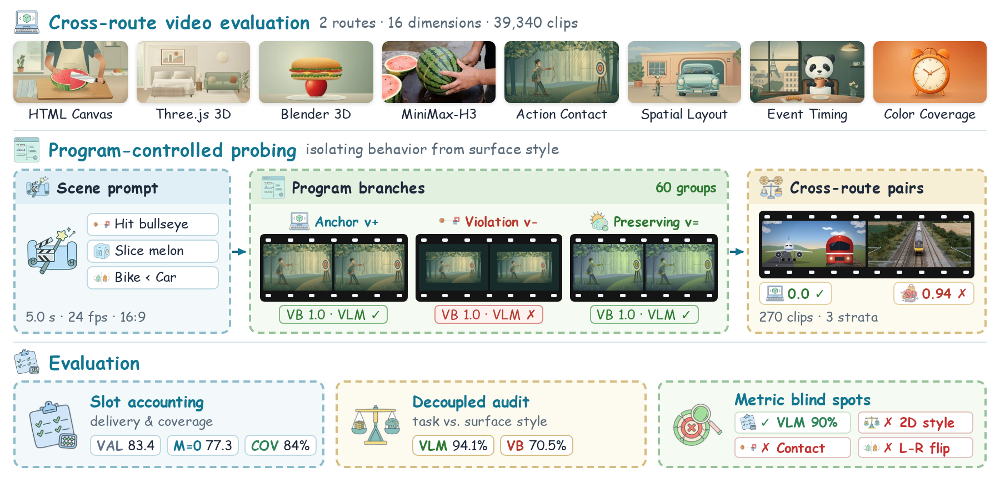
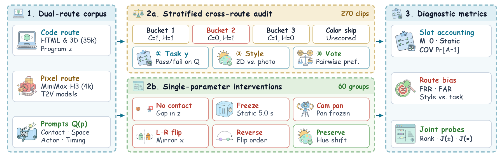

Matched audit
Same prompt, two routes
120 VBench prompts rendered by coding models and MiniMax-H3, with three-annotator completion and visual-preference labels.
CodingVBench
Evaluators validated on pixel clips can reverse visible completion on code-rendered videos. CodingVBench tests them on matched routes, human labels, and controlled scene-program edits.
Coding agents answer the same prompts through executable scene programs. Scores that look coherent on pixel T2V can still miss the requested event.
120 VBench prompts rendered by coding models and MiniMax-H3, with three-annotator completion and visual-preference labels.
Verified scene-program interventions: freeze, non-contact, camera pan, spatial flip, temporal reverse, and hue-preserving edits.
Compare UMT / GRiT / LAION-style native scores with frozen multi-frame VLM judges under a fixed protocol.
Report completion, visual quality, delivery, and scoring coverage separately when comparing production routes.
CodingVBench freezes the videos and varies the evaluator, so disagreements track judgment failures rather than generation noise.
Render the same prompts via code agents and MiniMax-H3; keep scene programs for editable cells.
Three annotators mark completion, code style, and pairwise visual preference on the matched set.
Edit verified programs to remove required behavior or shift hue while the task stays complete.
Score with native modules and frozen 8-frame VLMs; publish prompts, rules, and per-video outputs.


Real matched clips from coding models and MiniMax-H3. Hover a card for the shared prompt. Cards show VBench native scores, human labels, and GPT-6.1-Sol / Claude Sonnet 5.5 judgments with short rationales.
Completion agreement on the matched set, plus ranking accuracy on controlled behavioral violations.
| Judge | Agreement | Code false reject | Pixel failed accepted |
|---|---|---|---|
| Matched completion labels | |||
| Native modules | 71.6% | 26.1% | 75.0% |
| GPT-6.1-Sol (8 frames) | 92.7% | 1.3% | 37.5% |
| Claude Sonnet 5.5 (8 frames) | 93.9% | 0% | 43.8% |
| Controlled behavioral violations (50 pairs) | |||
| GPT-6.1-Sol correct rank below original | 50 / 50 across all five violation families | ||
| Sonnet correct rank | 46 / 50 | ||
Native aesthetic rankings also diverge from human visual preference. Full tables ship with the code release.
Optional full dumps for the broader VBench generation study:
@article{codingvbench2026,
title = {CodingVBench: Rethinking Video Quality Evaluation Beyond Generative Models},
author = {Anonymous},
journal = {arXiv preprint},
year = {2026}
}